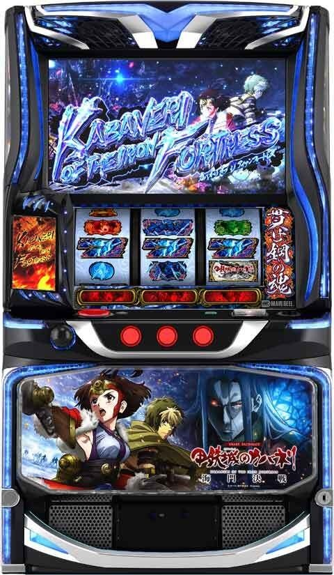
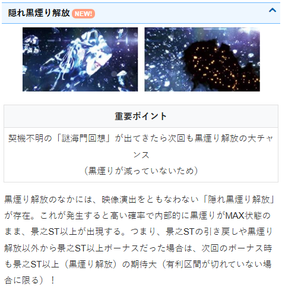
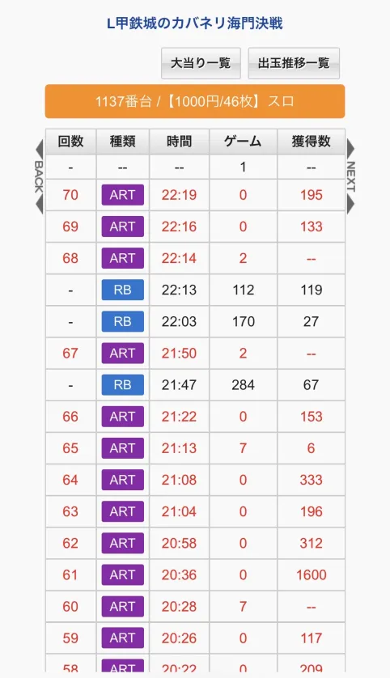
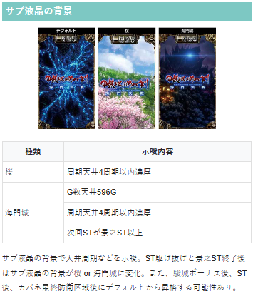
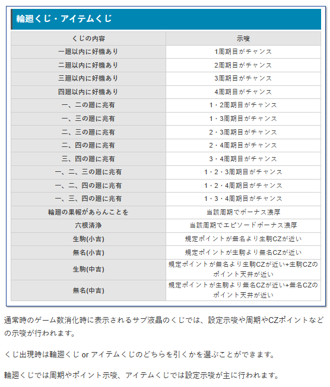
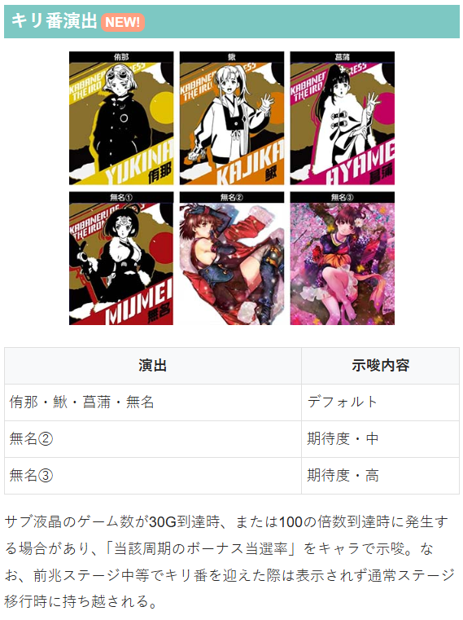
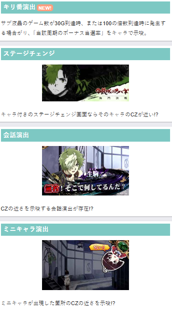
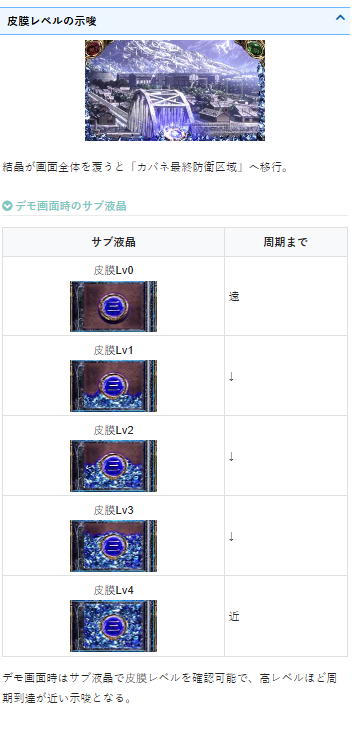
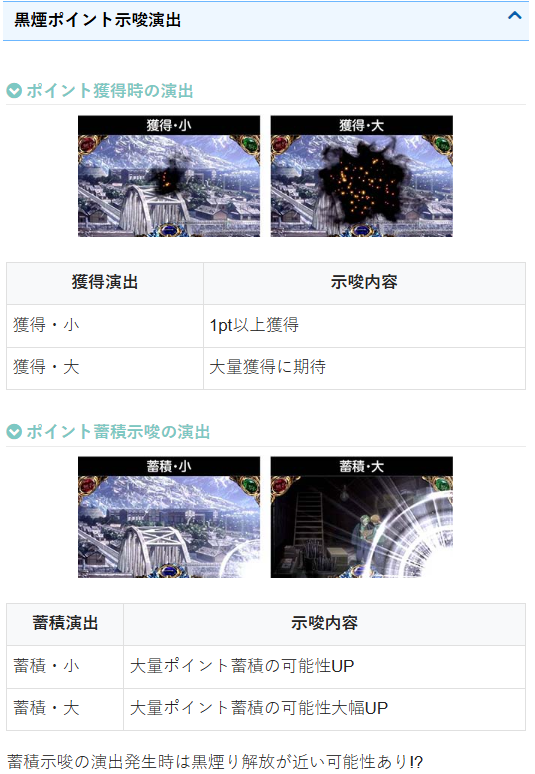
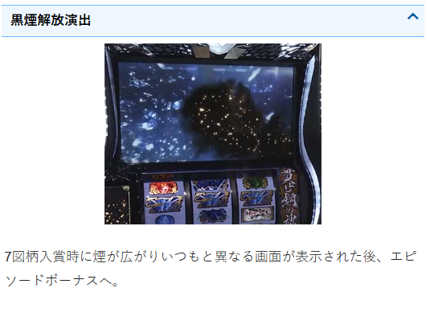

甲鉄城のカバネリ 海門(うなと)決戦

機種情報
【天井情報】
通常時を最大996G消化 or 最大6周期到達でエピソードボーナスに当選。
駿城ボーナス当選時は天井引き継ぎ。
朝イチリセット時・ST駆け抜け時・上位ST(景之ST以上)終了時はゲーム数天井が596G、周期天井が最大4周期に短縮。
【リセット判別】
不明
【有利区間について】
エンディング等で有利区間リセット時は内部的に「海門回想」を経由して、上位ST濃厚かつフリーズ高確となる「復讐の焔」へ突入。
【有利区間切断条件】
通常STから海門回想突入時に差枚が+1000～+1200を超える
差枚プラスで初当たり海門回想突入時
差枚プラスでエンディング発生時
狙い目
【リセット狙い（ST間）】
0スルー 80G
1スルー以降 130Gから
【ゲーム数天井狙い（ST間）】
下位ST後
620Gから or 4スルー
3スルー時500Gから
駆け抜け後
140G
上位ST後（上位ST突入から1000枚未満）
150G
1スルー以降 100Gから
上位STで上位ST突入から1250枚以上
0Gから
上位STで上位ST突入から1000から1249枚
90Gから
※上位ST突入からの獲得枚数は、上位ST突入信号履歴（ART7G）からの枚数で計算
※前作の傾向から今後、天井短縮時は250Gか3周期からくらいにボーダー上がっていく予想
【周期天井狙い】
下位ST後 5周期目から
天井短縮後 3周期目から
【ゾーン狙い】
150Gゾーン
150ゾーンは単体で狙えなそう
300Gゾーン
下位ST後 270Gから（2周期目時のみ）
それ以外（天井短縮） 天井狙い
※150Gゾーンは170-190G、300Gゾーンは320-340Gに当選分布が集まっている
【示唆関連の押し引きについて】
皮膜レベル
4でも単体では厳しそう？
サブ液晶
海門城 ST当選まで
桜 周期天井4周期以内濃厚というだけなので単体で狙えない
輪廻くじ・アイテムくじ
輪廻の果報が～ 当該周期ボーナス当選濃厚
六根清浄 当該周期エピソードボーナス濃厚
中吉 無名中吉は無名CZまで？生駒中吉は生駒CZまで？
キリ番演出
無名③ 当該周期消化？
アイキャッチ
キャラ付きのステチェン画面はそのキャラのCZ近いがどれくらい近いか不明
【黒煙ポイント狙い】
黒煙り示唆（極）→解放まで
黒煙り示唆（強）→解放まで？どれくらい解放が近いか不明
黒煙り示唆（極）の示唆
会話演出（非前兆中）→ベル揃い
深雪と景之の返し（非前兆中）→景之の返し（赤）、景之の返し（白）でベル
扇子演出→青扇子+ハズレ
ウィンドウSU→青SU+チャンス目以外
黒煙り示唆（強）の示唆
単体で狙えるか不明+複数あるため、ちょんぼりすた等で確認
【有利区間関連狙い】
差枚+1800枚以上
150Gゾーン 140Gから150Gゾーン抜けまで（1周期時のみ）
300Gゾーン 240Gから300Gゾーン抜けまで（2周期時のみ）
※有利区間切断条件は機種情報を確認
【隠れ黒煙り解放狙い】
履歴からでは、隠れ黒煙り解放か通常の解放か判断がつかない。
打っている台や目視で確認出来た場合は打てそう。

【2周期目失敗時押し順ナビ狙い】
※狙い目というよりこのタイミングでやめる時にフォローする感じ
■ 基本ルール
- やめ時・確認事項: 2周期目の前兆失敗後、押し順ナビが1回出るまで回す。
- ハイエナ狙い: 2周期前兆失敗直後の即やめ台があれば、押し順ナビの有無（および回数）を確認する。
■ 注意点：店舗ルールへの配慮
押し順ナビだけを確認して次々と台を移動する行為は、ホール側から**「カニ歩き」**とみなされるリスクがあります。
- プロ・ハイエナに厳しい店舗では、出禁や注意の対象になりやすいため、慎重に立ち回る必要があります。
【要約：チェックリスト】
カニ歩き注意（目立つ店舗では控える）。
2周期前兆失敗 → 即やめ厳禁。
押し順ナビ3回までフォロー。
参考元 やま鉄（X）
やめ時
続行するような示唆や状況（ST間ハマり等）が無ければヤメで良さそう。
その他
履歴
RB 駿城ボーナスorエピソードボーナス
21:47からのSTは駆け抜け
20:28,21:13のART7は上位STの信号
下位STは原則ART5以内（6を超えている報告あり）
上位STは原則ART7か8
上位ST後はサブ液晶が桜か海門スタートとなる

サブ液晶の背景

輪廻くじ・アイテムくじ

キリ番演出

その他示唆関連

皮膜レベルの示唆

黒煙ポイント示唆演出


参考元
基本情報
- メーカー: サミー
- 機械割: 97.5% 〜 114.9%
- 導入開始日: 2026年03月02日（月）
- ゲーム性概要: ●チャンス目がすべてのカギを握るゲーム性は前作を踏襲 ●今作ではチャンス目に応じてCZやボーナス直撃を抽選 ●駿城ボーナスはST期待度約20%、エピソードボーナスはST濃厚 ●カバネリアタックは自力の上乗せ特化ゾーンに進化し、平均枚数もアップ ●裏美馬を超える「裏景之ST」を搭載（期待枚数3600枚!?）


打ち方
打ち方・小役
打ち方（小役狙い）
「最初に狙う絵柄」 押し順ナビ発生時を除き、左1stのフリー打ちでOK。
「チャンス目の停止例」 各リールの停止位置（上・中・下段）は不問。チャンス目絵柄停止かつ、リプレイもベルも揃わなければチャンス目。 基本的にチャンス目1個＜複合チャンス目＜オールスター目の順に期待度が高い。
変則押しはNG
押し順ナビなし時は左リール第1停止での消化を推奨する。
チャンス目の2確目
「左リール青7サンド目狙い」
左リール少し早めに青7のサンド目を狙い、右リールをフリー打ち。
［チャンス目の2確目］
上段に無名チャンス目停止や青7サンド目停止はリプレイorチャンス目なので、第2停止でリプレイがテンパイしなければチャンス目の2確になる。
「左リール青BAR狙い」
左リール枠上〜上段に青BARを狙う。目押しが正確ならチャンス目の1確を出すことができる。
［チャンス目の1確目］
小役以上1確目
「最初に狙う絵柄」
左リール枠上に白BARを狙う。
上段にリプレイ停止で小役1以上1確なので、CZ中やST中のハズレ対応演出時に狙うと面白い。
［小役以上1確目］
解析情報通常時
小役関連
チャンス目確率
| 役 | 確率 |
|---|---|
| 無名チャンス目 | 1/38.9 |
| カバネチャンス目 | 1/77.7 |
| 生駒チャンス目 | 1/44.5 |
| 無名＆カバネチャンス目 | 1/546.1 |
| 無名＆生駒チャンス目 | 1/546.1 |
| カバネ＆生駒チャンス目 | 1/546.1 |
| オールスター目 | 1/7281.0 |
小役の合算確率
| 役 | 確率 |
|---|---|
| シングルチャンス目合算 | 1/16.4 |
| 複合チャンス目合算 | 1/182.0 |
| すべてのチャンス目合算 | 1/15.0 |
| リプレイ・ベルを含む小役合算 | 1/3.5 |
特定条件でのチャンス目確率
| 役 | 確率 |
|---|---|
| チャンス目高確率中 | 1/6.3 |
| カバネリアタック中 | 1/6.1 |
今作でも特定条件下では押し順ナビからチャンス目が揃うため、チャンス目確率がアップする。
内部状態関連
カバネリ高確・超カバネリ高確
今回もカバネリ高確中は対応チャンス目成立時に獲得できるポイント量がアップ。 新搭載の「超カバネリ高確」中は、対応チャンス目を引けば一発でCZに当選（カバネチャンス目は周期到達＝海門前兆へ移行）する。
（超）カバネリ高確
| チャンス目成立時 | 各カバネリ高確移行抽選 |
|---|---|
| 100G・250G消化時 | カバネチャンス目のカバネリ高確移行 |
| 450G・650G消化時 | カバネチャンス目の超カバネリ高確 |
| ボーナス・ST後 | カバネチャンス目のカバネリ高確移行 |
| ナビ高確中 | 最初に引いたチャンス目の カバネリ高確移行 |
前作におけるゲーム数消化のゾーンに対応するゲーム数では、カバネチャンス目の（超）カバネリ高確へ移行する。
［超カバネリ高確］ アイコン周りの帯に「超」の文字が表示されると超カバネリ高確だ。
ナビ高確
特定ゲーム数消化ごとに移行するチャンス目の高確率状態（滞在中は高確率帯が表示）。ナビ高確移行後、最初に成立したチャンス目のカバネリ高確へ必ず移行する。
ナビ高確移行ゲーム数
末尾00のゲーム数到達時
50G・150G・250G・350G・450G・650G到達時
チャンス目の抽選
チャンス目ごとの抽選内容
前作と同様、無名＆生駒チャンス目は成立時にポイントを獲得していき、規定ポイントに到達すれば対応するCZに当選。 カバネチャンス目も成立ごとにポイントを獲得して、CZではなくボーナス直撃を抽選する（規定ポイント到達→海門前兆を経由して当落を告知）。
チャンス目の抽選内容
| 無名チャンス目 | 無名CZ |
|---|---|
| 生駒チャンス目 | 生駒CZ |
| カバネチャンス目 | ボーナス直撃（周期抽選） |
複合チャンス目はそれぞれのポイントを獲得。複合チャンス目で同時にCZに当選した場合や、無名CZ本前兆中に生駒CZに当選した場合などに銅藍CZへ突入する。
本前兆中に引いたチャンス目は、次のCZや海門前兆へ向けたポイントの獲得に回るためムダ引きにはならない。
「皮膜レベル」 ポイントの蓄積状況を示唆するのが皮膜レベル。液晶周囲を覆うように、結晶のようなエフェクトが出現する。 デモ画面表示中のサブ液晶のエフェクトでも皮膜レベルを示唆する。
［サブ液晶での皮膜レベル示唆］ 真ん中の漢数字が現在の周期数（上画像は1周期目）。 皮膜レベルは0＜1＜2＜3＜4の5段階で、レベルが高いほどポイントが貯まっているor天井周期が近い可能性が高い。
［チャンス目後の前兆ステージ］
前兆ステージは無名チャンス目契機が第四坑道入口、生駒チャンス目契機は作戦会議だ。
カバネチャンス目（周期抽選）の前兆ステージはコチラ
周期抽選
カバネ最終防衛区域
カバネポイントが規定数に到達すると、カバネ最終防衛区域（海門前兆）への移行を抽選。ラストの連続演出成功でボーナス当選となる。 海門前兆発展で1周期到達、最大6周期目でエピソードボーナスに当選＝ST当選濃厚だ。
周期抽選概要
カバネチャンス目成立時にカバネポイントを獲得し、 規定ポイント到達で海門前兆を経由してボーナスの当否を告知
周期数に応じて期待度が変化、 最大6周期目が天井
基本は規定ポイント到達で周期が進むが、 150G消化で2周期目へ、300G消化で3周期目へ強制的に進む
1周期目は規定ポイントが近いチャンス
300G以内のボーナス当選期待度は 約77%
連続演出中のチャンス目で書き換えを抽選
「ST当選までゲーム数＆周期は引き継ぎ」 周期数はメイン液晶下部とサブ液晶に表示。駿城ボーナスでSTに当選しなかった場合、ゲーム数と周期数は引き継がれる。
［連続演出中の書き換えにも注目］
連続演出の「カタマリを撃破しろ！」中はフェイクだった場合でもチャンス目で書き換えを抽選。 複合チャンス目ならボーナス濃厚、オールスター目はエピソードボーナス濃厚になる。 連続演出中はシェイクビジョン発生でチャンス目かつ書き換えに期待だ。
カバネリチャンス（CZ）
無名CZ
小役でカバネを撃破し、最終的な撃破数でボーナス期待度が変化。連続して小役が入賞したり、チャンス目成立時は大量撃破に期待できる。
無名CZ性能
| 当選契機 | 規定無名ポイント到達 |
|---|---|
| 継続ゲーム数 | 10G＋α |
| 消化中の抽選 | 小役でカバネを撃破するほどチャンス、 チャンス目は2体以上撃破濃厚 |
| 成功期待度 | 約36% |
| 備考 | 5コンボor10体撃破の次ゲームで、 チャンス目を引くとエピソードボーナス以上 |
「カバネ撃破」 前作とは異なり、基本的には最終ゲームでボーナスの当否をジャッジ。小役が連続して入賞するとコンボとなり、複数撃破に期待できる。 道中のコンボ継続中はCZのゲーム数減算がストップ、10G消化前に5コンボ（5G連続で小役入賞）or10体撃破した場合は、その時点でボーナス濃厚になる。
「最終ジャッジ」 10G消化後は最終ジャッジでボーナスの当否を告知。非当選時は成立役に応じた成功書き換え抽選がおこなわれる。
最終的な色ごとのボーナス期待度
| 色 | 期待度 |
|---|---|
| 緑 | 28.5% |
| 赤 | 86.7% |
※ジャッジ中の書き換えを含む期待度
最終ジャッジ中の書き換え抽選
| 役 | 抽選 |
|---|---|
| リプレイ・ベル | 成功書き換え抽選あり |
| シングルチャンス目 | 成功書き換え抽選あり |
| 複合チャンス目 | ボーナス当選濃厚 |
| オールスター目 | エピソードボーナス当選濃厚 |
「完全撃破時はチャンス！」 5コンボor10体撃破で完全撃破。次ゲームでチャンス目を引けばエピソードボーナス以上濃厚だ。
完全撃破した次ゲームの抽選
| チャンス目 | エピソードボーナス |
|---|---|
| 複合チャンス目 | 約50%で真景之ST |
| オールスター目 | 真景之ST濃厚 |
生駒CZ
3つのライフが0になる前に20Gを消化できればボーナス当選。小役入賞でライフがMAXに戻るので、いかに小役を引いてゲーム数を進行させるかが重要だ。
生駒CZ性能
| 当選契機 | 規定生駒ポイント到達 |
|---|---|
| 継続ゲーム数 | 最大20G |
| 消化中の抽選 | ライフが0になる前に20Gを消化できればボーナス、小役入賞でライフ回復 |
| 成功期待度 | 約46% |
| 備考 | 複合チャンス目は無敵ゾーン突入 |
「カバネの攻撃」 生駒が攻撃を受けてしまうとライフが1減算。3回攻撃される前に小役を引ければライフはMAXに戻る。 今作はライフ0＝即終了ではなく、0になった次ゲームで小役を引けば再びMAXになる。
「無敵ゾーン」 複合チャンス目は一定ゲーム数間ライフが減らない無敵ゾーンへ移行。オールスター目を引けば…!?
銅藍CZ
もっとも期待度の高いCZで、無名ポイントと生駒ポイントが同時にMAXになった場合に突入。無名CZの本前兆中に生駒ポイントがMAXなど、前兆中にもう片方のCZに当選した場合も銅藍CZ突入となる。
銅藍CZ性能
| 当選契機 | 無名＆生駒ポイントの規定ポイント到達が複合 |
|---|---|
| 継続ゲーム数 | 10G |
| 消化中の抽選 | チャンス目でボーナスを抽選 |
| チャンス目確率 | 1/6.3 |
| 成功期待度 | 約78% |
| 備考① | ラスト2G間はチャンス目成立でボーナス濃厚 |
| 備考② | 複合チャンス目はエピソードボーナス濃厚 |
| 備考③ | オールスター目は真景之ST濃厚 |
「六根清浄目停止でボーナス」 チャンス目停止後などは、中リールに狙えが発生。六根清浄目（中リール中段青7）が止まればボーナス濃厚だ。
ボーナス当選率
| チャンス目 | 当選率 |
|---|---|
| シングルチャンス目 | 74.2% |
| 複合チャンス目 | 100% |
| オールスター目 | 100% |
黒煙りポイント（穢れ要素）
黒煙りポイント解説
CZ失敗時や駿城ボーナス終了時などに獲得する可能性のあるポイントで、MAXまで貯まると次回初当り時に海門回想（景之ST以上）or真景之STor裏景之STへ突入。 画面下から出現する黒煙りのサイズで獲得量を示唆、画面右下に吸い込まれた後のエフェクトで蓄積量が示唆される。
黒煙りポイント性能
| 初期ポイント | 有利区間移行時に抽選 |
|---|---|
| おもな獲得契機 | CZ失敗時、駿城ボーナス終了時、 ST単発時、 天井到達時、周期天井到達時（短縮時もOK） |
| ポイントMAX時 | 次回ボーナス当選で海門回想（景之ST以上）or 真景之STor裏景之ST濃厚 |
通常時・ST中の一部でもポイント獲得の可能性あり。 前作に比べて黒煙りポイントが貯まりやすく（解放されやすく）なっていて、1日に1回程度は解放に期待できる。
［獲得：小］
［獲得：大］
［蓄積：小］
［蓄積：大］
その他の黒煙り示唆はコチラ
フリーズ
裏景之ST突入動画
エピソードボーナス「乱吹く強者」後、真景之ST突入の導入ムービー中にフリーズ発生で裏景之STへ突入。
基本的に、真景之STと裏景之STのどちらに突入するかはこの瞬間までわからないので、本機の中でもドキドキするポイントだ。
解析情報ボーナス時
駿城ボーナス
駿城ボーナス概要
初当り時専用のボーナス。押し順ベルとチャンス目で駿城ポイントを貯めていき、最終的なポイントでSTの当否を抽選する。 オールスター目を引けば裏景之ST当選のチャンス!?
駿城ボーナス性能
| 当選契機 | CZ成功・周期抽選 |
|---|---|
| 継続ゲーム数 | 20G |
| 消化中の抽選 | 押し順ベルとチャンス目で駿城ポイントを獲得、 最終ゲームでSTをジャッジ |
| ST期待度 | 約20% |
| 備考① | 駿城ボーナスとエピソードボーナスの比率は約1：1 |
| 備考② | ST非当選時は周期数やゲーム数、 チャンス目のポイントなどはすべて持ち越し |
「駿城ポイント獲得」 実戦上、チャンス目は1000pt以上獲得濃厚。9999pt獲得でST当選となる。
「成功後は裏景之STのチャンスあり」 駿城ボーナス成功後は50枚払い出しのエピソードへ移行。このエピソード中は裏景之ST抽選がおこなわれていて、オールスター目を引けば当選に期待できる。
カバネリボーナス・エピソードボーナス
エピソードボーナス概要
通常時のエピソードボーナスはST当選濃厚。エピソードの種類によって恩恵（移行先）が異なる。
エピソードボーナス性能
| 当選契機 | 初当りの一部、ST中の特定条件達成後 |
|---|---|
| 1Gあたりの純増 | 約6.0枚 |
| 獲得枚数 | 150枚の払い出しで終了 |
| 備考① | 駿城ボーナスとエピソードボーナスの比率は約1：1 |
エピソードの種類と恩恵
| 煌めく思い | ST突入 |
|---|---|
| 狂気の復讐者 | 景之ST以上（海門回想を経由） |
| 乱吹く強者 | 真景之STor裏景之ST |
［狂気の復讐者］
［乱吹く強者］
カバネリボーナス概要
ST中のメインとなるボーナスで、カバネリアタックで決定した枚数を払い出すまで継続。 消化中はチャンス目と逆押しカットインで黒血漿メーターを獲得していき、MAXになるごとに六根魂（カバネリ高確）を獲得する。
カバネリボーナス性能
| 枚数 | カバネリアタックで決定 |
|---|---|
| 1Gあたりの純増 | 約6.0枚 |
| 消化中の抽選 | 黒血漿メーター抽選、 メーターMAXで六根魂（カバネリ高確）獲得 |
「逆押しカットイン」 右・中リールをフリー打ちし、左リールに青7のサンド目を目押し。目押しに失敗しても、逆押しさえしていれば黒血漿メーターは獲得できる。 目押し成功（青7サンド目停止）時に発生するボイスで設定を示唆!?
KABANERI OF THE IRON FORTRESS（ST）
ST概要
チャンス目を引いてボーナス当選を目指す、前作と同様のゲーム性。カバネリ高確獲得時は、対応したチャンス目を引けばボーナスの大チャンスになる。 ラスト3G（覚醒パート）はチャンス目の期待度大幅アップかつ、最終ゲームでのチャンス目はボーナス濃厚だ。
ST性能
| 当選契機 | 駿城ボーナス成功後、エピソードボーナス後 |
|---|---|
| 継続ゲーム数 | 共闘パート（22G）＋覚醒パート（3G） |
| 消化中の抽選 | チャンス目でボーナス抽選 |
| ST継続期待度 | 約76% |
| チャンス目確率 | 1/9.9 |
| 備考① | カバネリ高確に対応したチャンス目は期待度アップ |
| 備考② | 覚醒パートはチャンス目のボーナス期待度アップ、 最終ゲームのチャンス目はボーナス濃厚 |
| 備考③ | チャンス目後は連続演出終了までゲーム数減算ストップ |
※ST中はカバネチャンス目の名称が来栖チャンス目に変化
「カバネリ高確」 ST初回はいずれか2つのカバネリ高確を獲得してスタート。2連目以降はボーナス中に黒血漿メーターがMAXになるごとに、カバネリ高確を1つ獲得できる。
［超カバネリ高確］ 超カバネリ高確中は対象のチャンス目を引けばボーナス濃厚。 上画像の場合、無名チャンス目を引けばボーナス濃厚だ。
「共闘パート」 さまざまな演出で期待度を示唆。基本的にはチャンス目→前兆→バトルの流れでボーナスの当否を告知する。
［共闘パート中の連続演出］
チャンス目成立〜連続演出中はゲーム数の減算がストップする。
ボーナス当選期待度
| 演出 | 期待度 |
|---|---|
| 生駒VS鵜飼 | 低 |
| 無名VS銅藍 | ↓ |
| 来栖VSワザトリ | ↓ |
| 双嵐ノ刻 | 高 |
「覚醒パート」 ラスト3Gは覚醒パート。チャンス目を引ければアツい！
［ツラヌキジャッジ］ 連続演出のラストや覚醒パートでチャンス目を引くとツラヌキジャッジが発生。六根清浄目が止まればボーナス濃厚だ。
（超）カバネリアタック
カバネリアタック
ST中のボーナス当選後は、（超）カバネリアタックでボーナス枚数を決定。今作は成立役によって獲得枚数が変化する特化ゾーン形式になっている。
カバネリアタック性能
| 当選契機 | ST中のボーナス当選後 |
|---|---|
| 継続ゲーム数 | 4G（超は6G） |
| 消化中の抽選 | 成立役に応じた枚数上乗せ抽選 |
| 1Gの最低上乗せ | 50枚（最低でもトータル200枚以上） |
| チャンス目成立時 | 100枚以上、対応チャンス目ならさらにチャンス |
| チャンス目確率 | 1/6.1 |
| 備考① | ST中のカバネリ高確をそのまま引き継ぎ |
| 備考② | 1契機で300枚上乗せ時は約50%でツラヌキ上乗せ |
| 備考③ | 上位版の超カバネリアタックあり |
ST中のカバネリ高確はカバネリアタックにも引き継がれるため、対応するチャンス目を引けば大量上乗せのチャンスとなる。
「多彩な上乗せパターンあり」 カットイン発生などはチャンスアップ。
「超カバネリアタック」 ゲーム数が6Gにアップした上位版。超カバネリ高確も獲得できるので、対応チャンス目を引けばアツい。
「ツラヌキ上乗せ」 1契機で300枚を上乗せすると、約50%でツラヌキ上乗せが発生。 ツラヌキ上乗せでの最大上乗せ枚数は3000枚と超強力だ。
海門回想
海門回想概要
エピソードボーナス（狂気の復讐者）消化後などに突入する、前作の無名回想に近い状態。 消化中は全役でポイントの獲得を抽選していて、100pt獲得ごとにエピソードが進行していく（今回はジャッジなしで必ず進行）。エピソードは4段階で、進行するごとに六根魂（カバネリ高確）を獲得かつ、復讐の焔（フリーズ高確）を抽選。 4thエピソードまで到達時すれば復讐の焔突入濃厚で、海門回想終了後に復讐の焔へ移行する。
海門回想性能
| 移行契機 | エピソードボーナス（狂気の復讐者）消化後、 CZ成功時の一部、黒煙りポイントMAX後など |
|---|---|
| 継続ゲーム数 | 70G |
| 消化中の抽選 | 全役でポイント獲得抽選、 100pt獲得でエピソードが進行 |
| エピソード進行時 | 六根魂（カバネリ高確）獲得＆復讐の焔抽選 |
| 4thエピソード到達時 | 復讐の焔の権利を獲得 |
| 4thエピソード成功時 | 超カバネリ高確獲得 |
「ポイント獲得」
ポイントの獲得状況はサブ液晶に表示。100pt到達でエピソードが進行する。
「エピソード1〜3」 各エピソード到達ごとに復習の焔を抽選かつ、六根魂を1つ獲得できる。
［復讐の焔（ゲーム数）獲得］ 各エピソードクリア時に復讐の焔を獲得した場合は、獲得したゲーム数が告知される。
「エピソード4」 エピソード4到達で復讐の焔突入濃厚。成功させると超カバネリ高確を獲得できる。
［エピソード進行時］復讐の焔のゲーム数獲得率
| フリーズ高確 | エピソード1 | エピソード2 | エピソード3 | |
|---|---|---|---|---|
| 非獲得 | 99.2% | 93.8% | 75.0% | |
| ＋1G | ー | ー | ー | |
| ＋3G | ー | 3.1% | 12.5% | |
| ＋5G | 0.4% | 2.7% | 12.1% | |
| ＋10G | 0.4% | 0.4% | 0.4% | |
| フリーズ高確 | エピソード4 | 復讐の焔獲得後 （エピソード不問） | ||
| 非獲得 | ー | ー | ||
| ＋1G | ー | 50.0% | ||
| ＋3G | 50.0% | 25.0% | ||
| ＋5G | 48.4% | 24.6% | ||
| ＋10G | 1.6% | 0.4% |
※エピソード非獲得時は六根魂のみを獲得 ※エピソード1～4は復讐の焔獲得前の数値
復讐の焔のゲーム数を獲得すれば、以降のエピソードでは最低でも1Gずつ獲得できる。
復讐の焔
復讐の焔概要
海門回想後（権利獲得後）に移行するフリーズ高確状態。 おもにチャンス目でフリーズ抽選がおこなわれ、フリーズが発生すれば真景之STor裏景之ST濃厚。フリーズ非発生時は景之STへ移行する。
復讐の焔性能
| 移行契機 | 海門回想中の抽選、 4thエピソード到達後は必ず突入 |
|---|---|
| 継続ゲーム数 | 3G以上 |
| チャンス目確率 | 1/15.0 |
| 消化中の抽選 | チャンス目でフリーズを抽選 |
| チャンス目 | 約25%でフリーズ、複合チャンス目は激アツ |
| 複合チャンス目 | フリーズ濃厚 |
| フリーズ発生時 | エピソードボーナスを経由して真or裏景之STへ |
| フリーズ非発生時 | 景之STへ（エピソードボーナス非経由） |
| 備考 | 最終ゲームのチャンス目は成功濃厚 |
「フリーズあおり発生時は注目」 あおり成功でフリーズ！ フリーズ後はエピソードボーナス（乱吹く強者）を経由して真or裏景之STへ突入する。
（真・裏）景之ST
景之ST
チャンス目でボーナスを抽選するという基本的なゲーム性は通常のSTと共通。毎セット、必ずカバネリ高確を獲得できるため、ボーナス期待度が高い（初回は複数のカバネリ高確獲得のチャンス）。
景之ST 性能
| 突入契機 | 復讐の焔でフリーズ非発生後 |
|---|---|
| 継続ゲーム数 | 25G |
| 消化中の抽選 | チャンス目でボーナス抽選 |
| ST継続期待度 | 約83% |
| 備考① | 毎セット必ずカバネリ高確を獲得 |
| 備考② | 景之ループ当選で終了後 →次回の初当りSTが景之STになる |
真景之ST
毎セット、超カバネリ高確を獲得するので、景之STよりもボーナス期待度の高いST。 来栖対応の超カバネリ高確で来栖チャンス目を引けば超カバネリアタック濃厚だ。
真景之ST 性能
| 突入契機 | 復讐の焔でフリーズ発生後 |
|---|---|
| 継続ゲーム数 | 25G |
| 消化中の抽選 | チャンス目でボーナス抽選 |
| ST継続期待度 | 約89% |
| 備考① | 毎セット必ず超カバネリ高確を獲得 |
| 備考② | カバネリボーナス中に獲得する六根魂は、 すべて超カバネリ高確 |
［超カバネリ高確があるからアツイ］
もちろん超カバネリ高確対応のチャンス目を引けばボーナス濃厚になる。
裏景之ST
本機最強のプレミアムST。ST中も押し順ベルのナビが発生するので、純増約6.0枚/Gで出玉を増やしながらボーナスを目指すことができる。 裏景之ST終了後は必ず景之ST以上へ移行する。
裏景之ST 性能
| 突入契機 | 復讐の焔でフリーズ発生後の一部 |
|---|---|
| 継続ゲーム数 | 25G |
| 消化中の抽選 | チャンス目でボーナス抽選 |
| 1Gあたりの純増 | 約6.0枚 |
| 備考 | 終了後は再び景之ST以上へ |
| 期待枚数 | 約3600枚（※） |
※通常時へ戻るまでの一連の流れでの期待枚数
［ボーナス抽選も大幅に強化］
すべて超カバネリ高確に!?
ST共通の抽選
［共闘パート］ボーナス当選率
| 役 | 当選率 |
|---|---|
| 非対応シングルチャンス目 | 25% 裏景之ST中は33% |
| 対応無名チャンス目 | 60% |
| 対応生駒チャンス目 | 66% |
| 対応来栖チャンス目 | 100% |
| 非対応複合チャンス目 | 66% |
| 対応チャンス目を含む複合チャンス目 | 100% |
| オールスター目 | 100% |
| 超カバネリ高確対応チャンス目 | 100% |
裏景之ST中は非対応シングルチャンス目のボーナス当選率がアップ。対応チャンス目や複合チャンス目の当選率はすべて共通だ。 ボーナス本前兆中のチャンス目は、ボーナスの昇格が抽選される。
［覚醒パート（最終ゲームを除く）］ボーナス当選率
| 役 | 当選率 |
|---|---|
| 非対応シングルチャンス目 | 66% |
| その他チャンス目 | 100% |
※覚醒パート最終ゲームのチャンス目はボーナス濃厚
演出情報
通常時
サブ液晶の天井周期示唆
| パターン | 示唆 |
|---|---|
| タイトルロゴのみ | デフォルト |
| 桜 | 4周期以内にエピソードボーナス 当選の チャンス |
| 海門城 | 4周期以内にエピソードボーナス当選かつ、 海門回想スタート、天井が596G |
今回もST駆け抜け後・景之ST終了後は天井が短縮されるため桜or海門城が表示される。
輪廻くじパターン（一部）
| パターン | 示唆 |
|---|---|
| 一廻以内に好機あり | 1周期目がチャンス |
| 二廻以内に好機あり | 2周期目がチャンス |
| 三廻以内に好機あり | 3周期目がチャンス |
| 四廻以内に好機あり | 4周期目がチャンス |
| 一、二の廻に兆有 | 1・2周期目がチャンス |
| 一、三の廻に兆有 | 1・3周期目がチャンス |
| 二、三の廻に兆有 | 2・3周期目がチャンス |
| 二、四の廻に兆有 | 2・4周期目がチャンス |
| 三、四の廻に兆有 | 3・4周期目がチャンス |
| 一、二、三の廻に兆有 | 1・2・3周期目がチャンス |
| 一、二、四の廻に兆有 | 1・2・4周期目がチャンス |
| 一、三、四の廻に兆有 | 1・3・4周期目がチャンス |
| 輪廻の果報があらんことを | 当該周期でボーナス濃厚 |
| 六根清浄 | 当該周期でエピソードボーナス濃厚 |
| 生駒：小吉 | 規定ポイントが無名より生駒CZが近い |
| 無名：小吉 | 規定ポイントが生駒より無名CZが近い |
| 生駒：中吉 | 規定ポイントが無名より生駒CZが近い ＋生駒CZのポイント天井が近い |
| 無名：中吉 | 規定ポイントが生駒より無名CZが近い ＋無名CZのポイント天井が近い |
通常時の特定ゲーム数消化時に表示されるサブ液晶の輪廻くじの中では周期や規定ポイントが示唆される。 周期や規定ポイントをチェックしたい時は輪廻くじを選択しよう（アイテムくじは設定示唆）。
キリ番演出
サブ液晶のゲーム数が30G到達時、もしくは100の倍数ゲームに到達すると、サブ液晶にキャラ画像が出現。キャラの種類で当該周期のボーナス当選期待度を示唆する。 連続演出中、第四坑道入口、作戦会議、カバネ最終防衛区域ステージ中といった前兆中は、キリ番に到達しても画面は表示されず、各前兆終了後に表示される（持ち越しされる）。
当該周期のボーナス期待度
| キャラ | 期待度序列 |
|---|---|
| 侑那・鰍・菖蒲・無名 | デフォルト |
| ねころび無名 | ↓ |
| 桜の無名 | 高 |
ステージの示唆
| ステージ | 示唆 |
|---|---|
| 操車場 | デフォルト |
| 甲鉄城 | デフォルト |
| 第六区画線路沿い | 当該周期のボーナス期待度アップ |
| 第四区画入口 | 無名チャンス目の前兆 |
| 作戦会議 | 生駒チャンス目の前兆 |
| カバネ最終防衛区域 | 周期前兆 |
ST終了時は操車場ステージへ移行する。
［操車場］
［甲鉄城］
［第六区画線路沿い］ 第六区画線路沿いへ移行すれば当該周期のボーナス当選期待度がアップする。
［第四区画入口］
［作戦会議］
［カバネ最終防衛区域］
［会話演出］黒煙りポイントの蓄積量示唆
| パターン | 示唆 |
|---|---|
| 深雪 | 蓄積示唆 ※右上がりベル揃い時は蓄積示唆［極］ |
| 深雪→返答が赤セリフ | 蓄積示唆［極］ |
| 返答あり （キャラ不問） | 蓄積示唆［強］ ※右上がりベル揃い時は蓄積示唆［極］ |
| リプレイ・ベル揃い時に 会話演出発生 | 蓄積示唆［極］ |
※前兆中を除く
若干ではあるが、黒煙りポイントの蓄積量が多いほど会話演出が発生しやすい（非前兆中）。
［深雪］
［返答］ 最初が深雪以外でも、返答があれば蓄積示唆［強］となる。
［返答：赤セリフ］
［扇子演出］黒煙りポイントの蓄積量示唆
| パターン | 示唆 |
|---|---|
| 白扇子 | ハズレ時に発生で蓄積示唆［強］ |
| 青扇子 | ハズレ時に発生で蓄積示唆［極］ |
※前兆中を除く ※扇子演出はリプレイ対応
［白扇子］
［青扇子］
［ウインドウステップアップ演出］ 黒煙りポイントの蓄積量示唆
| パターン | 示唆 |
|---|---|
| ステップ1 | ベル・リプレイ時に発生で蓄積示唆［強］ |
| ステップ2 | ハズレ・リプレイ時に発生で蓄積示唆［強］ |
| 青ウインドウ | チャンス目否定で蓄積示唆［極］ |
※前兆中を除く ※ステップ1はハズレ・ステップ2はベル対応
［青ウインドウ］ 会話演出と同様に、若干だが黒煙りポイントの蓄積量が多いほどウインドウステップアップ演出が発生しやすい（非前兆中）。
ポイント示唆
【会話演出の示唆】
［会話演出］ポイント示唆
| パターン | 示唆 |
|---|---|
| 無名の名前が赤 | 無名CZの天井示唆［弱］ |
| 赤文字の返答 | 無名CZの天井示唆［強］ |
| 生駒の名前が緑 | 生駒CZの天井示唆［弱］ |
| 緑文字の返答 | 生駒CZの天井示唆［強］ |
| 舵取りの名前が青 | 海門前兆の天井示唆［弱］ |
| 青文字の返答 | 海門前兆の天井示唆［強］ |
無名・生駒・舵取りの名前に色がついていると、対応するチャンス目の天井が近いことを示唆。各セリフに返答があれば強パターンになる。
［無名ポイント示唆］
［生駒ポイント示唆］
［カバネポイント示唆］
【アイキャッチの示唆】
［アイキャッチ］ポイント示唆
| パターン | 示唆 |
|---|---|
| 無名 | 無名CZの天井示唆 |
| 生駒 | 生駒CZの天井示唆 |
| 景之 | 海門前兆の天井示唆 |
［無名］
［生駒］
［景之］
【無名と生駒の会話演出の示唆】
［無名と生駒の会話演出］ポイント示唆
| パターン | 示唆 |
|---|---|
| カバネの群れ→無名青文字 | 無名CZの天井示唆 |
| 心臓ドックン→生駒青文字 | 生駒CZの天井示唆 |
| 景之たち→生駒青文字 | 海門前兆の天井示唆 |
一連の会話のラストで示唆画面（カバネの群れなど） が表示されると、対応したキャラのカット（青文字）が発生する。
［カバネの群れ→無名青文字］
［心臓ドックン→生駒青文字］
［景之たち→生駒青文字］
【無名ミニキャラ】
［無名ミニキャラ］ポイント示唆
| パターン | 示唆 |
|---|---|
| セリフなしorえへへ… | 出現するほど天井が近い |
| もうすぐだよ | 出現したアイコンの天井示唆［弱］ |
| 近いよ | 出現したアイコンの天井示唆［強］ |
［えへへ…］
［もうすぐだよ］
［近いよ］
※示唆はすべて前兆中に発生した場合を除く
前兆中の演出法則
| 演出 | 法則 |
|---|---|
| 落ち込む無名演出 | リプレイ・チャンス目対応 ※対応役否定でチャンス |
| ルーレット演出 | チャンス目対応 ※対応役否定でチャンス |
| 文字演出 | チャンス目対応 ※対応役否定でチャンス |
| 枠エフェクト演出 | 青はチャンス、黒は激アツ |
［落ち込む無名演出］
［ルーレット演出］
［文字演出］
［枠エフェクト演出］
黒エフェクト発生時は本前兆の期待大！
海門前兆中の演出法則
| 演出 | 法則 | |
|---|---|---|
| カバネ撃破演出 | ベル対応 ※ハズレでチャンス | |
| 障子演出 | 無名の通過が遅いほどチャンス、 カバネが通過なら激アツ （※1） | |
| 金文字系 | 激アツ、EPBの期待大 | |
| 無名カットイン | 激アツ、EPBの期待大 | |
| 激熱文字系 | 激アツ、EPBの期待大 | |
| 私は カバネリ演出 | 前兆ステージ以外 | チャンス |
| 私は カバネリ演出 | 前兆ステージ中 | EPBの大チャンス |
| 蝶飛翔演出 | 青い蝶 | 止まれば大チャンス |
| 蝶飛翔演出 | 赤い蝶 | 止まれば大チャンス＆EPBに期待、 止まらなければEPB濃厚 |
| UI ルーレット演出 | 好機 | チャンス目否定で大チャンス |
| UI ルーレット演出 | 兆 | 出現するほどチャンス、 チャンス目停止で大チャンス |
※EPB…エピソードボーナス ※1…CZ前兆中の障子演出はカバネ通過がデフォルト
［カバネ撃破演出］
［障子演出］
［金文字］ 金文字や激熱を含むセリフなどはエピソードボーナス当選に期待！
［私はカバネリ演出］ 前兆ステージへ移行する前に発生→失敗した場合でも、その後前兆ステージへ移行すればエピソードボーナスの期待度アップとなる。
［蝶飛翔演出］ 蝶がアイコンに止まるかどうかがポイント。 赤はチャンスアップで止まるのがデフォルト、止まらなければエピソードボーナス濃厚だ。
［UIルーレット演出］
リールバックライトフラッシュ
リプレイ・ベル成立時のリールバックライトフラッシュがいつもと違えば、無名or生駒のカバネのポイントが天井に近いことを示唆する（前兆中を除く）。 CZ前兆中に発生した場合は本前兆濃厚、海門前兆中はVフラッシュ発生でボーナス濃厚だ。
リールバックライトフラッシュの示唆
| 状況 | 示唆 |
|---|---|
| 非前兆中 | 無名or生駒ポイントが天井に近い |
| CZ前兆中 | CZ本前兆濃厚 |
| 海門前兆中 | Vフラッシュならボーナス濃厚 |
ボーナス関連
カバネリボーナス中の楽曲
| 楽曲 | アーティスト |
|---|---|
| 鋼鉄の意志 | nana hatori |
| 咲かせや咲かせ | EGOIST |
| KABANERI OF THE IRON FORTRESS | EGOIST |
| ninelie | Aimer with chelly |
| S_TEAM | 澤野弘之（Vo：Eliana） |
| Through My Blood ＜AM＞ | Aimer |
| Warcry | 澤野弘之（Vo：mpi） |
ST・上位ST関連
演出ごとの対応役とチャンス目期待度
| 演出 | 対応役 | チャンス目期待度 |
|---|---|---|
| ST会話演出 | ハズレ | 約10% |
| 銃撃演出 | 右上がりベル | 約10% |
| カバネナビ演出 | 右上がりリプレイ | 約20% |
| 戦況演出 | 中段リプレイ | 約45% |
| ステップアップ演出 | 下段ベル | 約50% |
※対応役否定でチャンス目濃厚
演出ごとに対応役が存在し、対応役を否定する出目が止まればチャンス目の1確や2確になるので、左リールに青7を狙って成立役を絞り込む楽しみ方もありだ。
［ST会話演出］ 例えばST会話演出の場合、対応役はハズレ（前兆中除く）。 左リールに青7のサンド目が止まったり、上段に無名チャンス目が止まる小役以上濃厚の出目が止まればチャンス目の1確になる。レバーON時の赤セリフは複合チャンス目以上orボーナス濃厚。喋るキャラにも秘密あり!?
［銃撃演出］
［カバネナビ演出］
上画像のように左が女カバネなら、チャンス目以上濃厚だ。
［戦況演出］
［ステップアップ演出］
ステップ2（無名）はチャンス目以上、ステップ3（来栖）なら複合チャンス目以上濃厚になる。
カバネリチャレンジ（2択当て）
2択正解でチャンス目が停止。 左から押した場合は内部的に50%でチャンス目が停止したものとしてボーナス抽選がおこなわれる。
演出ごとの対応役
| 演出 | 対応役 |
|---|---|
| ST会話演出 | ハズレ |
| セリフ演出：景之 | 右上がりベル |
| 景之銃撃演出 | 右上がりリプレイ |
| セリフ演出：生駒と無名 | 中段リプレイ |
| 生駒攻撃演出 | 下段ベル |
各演出の対応役を否定する出目が止まればチャンス目！
［ST会話演出］
［セリフ演出；景之］
［景之銃撃演出］
［セリフ演出：生駒と無名］
［生駒攻撃演出］
※示唆はすべて前兆中に発生した場合を除く
演出ごとの対応役
| 演出 | 対応役 | |
|---|---|---|
| 生駒 | 上乗せ演出 | ハズレ目orベルorチャンス目 |
| 生駒 | 二分割演出 | ベルorチャンス目 |
| 無名 | 上乗せ演出 | ハズレ目orリプレイorチャンス目 |
| 無名 | 二分割演出 | リプレイorチャンス目 |
| 来栖 | 上乗せ演出 | チャンス目 |
| 来栖 | 二分割演出 | チャンス目 |
※ハズレ目には押し順ナビ→ハズレを含む
［生駒上乗せ演出］
［生駒二分割演出］
［無名上乗せ演出］
［無名二分割演出］
［来栖上乗せ演出］
［来栖二分割演出］
来栖はパターン不問でチャンス目成立濃厚だ。
裏ボタン系
PUSHボタンの確定告知
| 手順 | リール停止後にPUSHボタンを押す ※タイミングはいつでもOK |
|---|---|
| 効果 | ボーナス当選時の一部で 告知音発生＋ランプ虹点灯＋下パネル消灯 |
パネ振りモード
ST中にパネ振りモード設定することで、ボーナス当選ゲームのレバーON〜第3停止までのいずれかで「ポキューン」と当選を告知してくれる。
パネ振りモード
| 設定手順 | ST中の全リール停止中にサブ液晶を1.5秒以上長押し |
|---|---|
| 効果 | ボーナス当選時の約7割で レバーON～第3停止の間にポキューン告知発生 |
| 解除手順 | ST中の全リール停止中に再びサブ液晶を1.5秒以上長押し ※ST終了時も必ず解除 |
| 備考 | パネ振りモード設定中はサブ液晶の下側が赤く発光 |
パネ振りモード設定時は「ピコーン」という効果音が鳴って、サブ液晶上のパネルがフラッシュする。
ボタン連打の確定告知
ST中の狙え演出でPUSHボタンを連打すると、ボーナス当選時の一部で確定告知（告知音＋LCRランプ点滅）が発生する。
ボタン連打の確定告知
| 手順 | ST中の決着ゲームの狙え発生時に、 レバーON→リール回転までの間にPUSHボタン連打 |
|---|---|
| 効果 | ボーナス当選時の一部で告知音発生 |
サミー開発ボイス
サミー開発ボイスで疑問や質問を受付中!!

通常時
CZ前兆ステージ中の演出法則
| 演出 | 法則 | |
|---|---|---|
| スズナリ演出 | ベル対応 ※ハズレでチャンス | |
| カバネ通過演出 | 通過するカバネが多いとチャンス、 立ち止まり襲ってくると大チャンス | |
| カバネ顔アップ演出 | 出現するほど期待度アップ | |
| 障子演出 | 通過するカバネが多いと期待度アップ 無名が通過なら激アツ（※） | |
| 蝶飛翔演出 | 無名CZの前兆中に生駒のUIに飛ぶと、 銅藍CZの期待度大幅アップ | |
| UI ルーレット演出 | 好機 | チャンス目否定で大チャンス |
| UI ルーレット演出 | 兆 | 出現するほどチャンス、 チャンス目停止で大チャンス |
| 玄路を説得しろ！ | 無名CZの前兆中に発生すると、 銅藍CZの可能性大 | |
| カバネの発生源を特定しろ！ | 生駒CZの前兆中に発生すると、 銅藍CZの可能性大 | |
| 銅藍あおり演出 | 最終的に銅藍登場で銅藍CZ |
※海門前兆中の障子演出は無名通過がデフォルト
［スズナリ演出］
［カバネ通過演出：カバネ多］
［カバネ通過演出：カバネ襲ってくる］
［カバネ顔アップ演出］
［障子演出：カバネ多］
［玄路を説得しろ！］
［カバネの発生源を特定しろ！］
［銅藍あおり演出］